Modeling patterns provide the ability to create complex models faster and to use and reuse modeling pattern.
Stardust is shipped with some predefined modeling patterns. An Eclipse view, the Patterns View is provided, where you can select patterns and add them via drag & drop into a model diagram. The model elements of the pattern are copied into the underlying process definition. A wizard is invoked which allows parameterization of the pattern. This dialog contains entry field for parameters specifying the individual pattern. This could be for example the number of activities or the type of activities.
You can achieve the predefined patterns from the list in the Patterns Views. To open the Patterns Views, select Window > Show View > Process Manager > Patterns View.
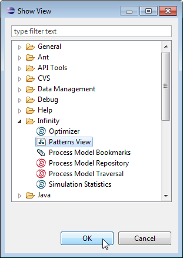
Figure: Open the Patterns View
In this view you can choose predefined patterns from the categories Basic Control Flow Pattern and Advanced Branching and Synchronization Patterns, which are described in detail in the following section. The patterns can be dragged and dropped to a process diagram. In most cases you can set parameters, which will be requested in an opening dialog.
On the right side of the view you can see a description and an example diagram for the pattern you selected.
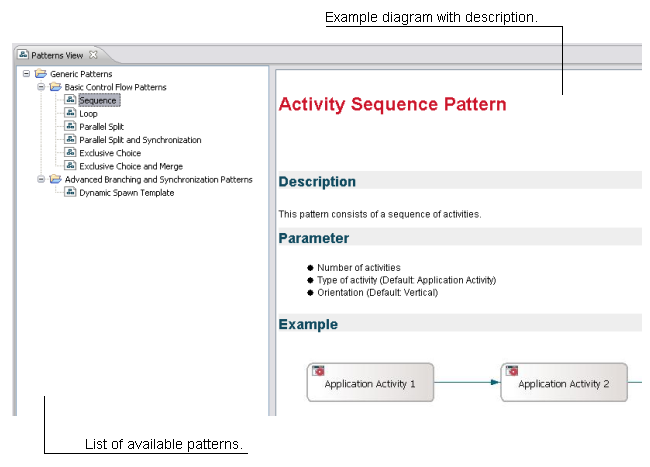
Figure: The Patterns View
Stardust provides the following basic control flow patterns:
This pattern consists of a sequence of activities. In the Sequence Template dialog you can set the following parameters:
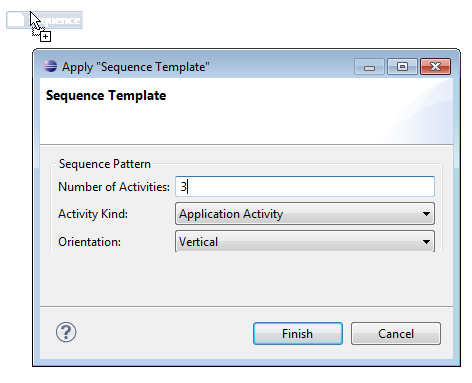
Figure: Enter Parameters for the Sequence Pattern
An example Sequence pattern with 3 application activities and vertical orientation would look like the following:
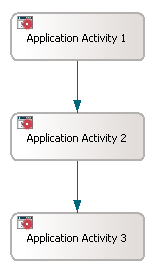
Figure: Example Sequence Pattern added to the Diagram.
This pattern consists of a sequence of N activities and a loop transition back to the first. In the Loop Template dialog you can set the following parameters:
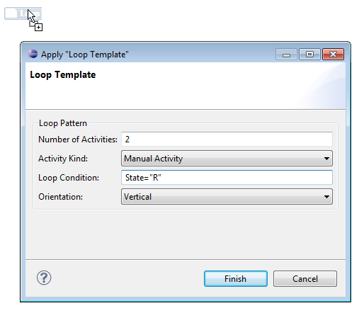
Figure: Enter Loop Parameters for the Pattern
An example Loop pattern with 2 activities, the loop condition State="R" and vertical orientation would look like the following:
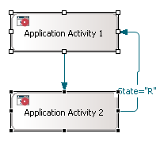
Figure: Example Loop Pattern added to the Diagram.
This pattern consists of a start activity which spawns via AND to N threads. In the AND Split Template dialog you can set the following parameters:
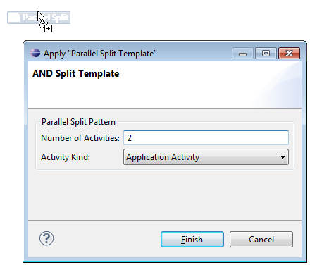
Figure: Enter Parallel Split Parameters for the Pattern
An example Parallel Split pattern with 3 route activities would look like the following:
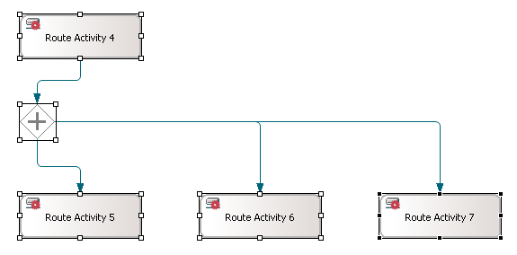
Figure: Example Parallel Split Pattern added to the Diagram.
This pattern consists of a start activity which spawns via AND to N threads with one activity each and joins via AND to one end activity. In the AND Split Template dialog you can set the following parameters:
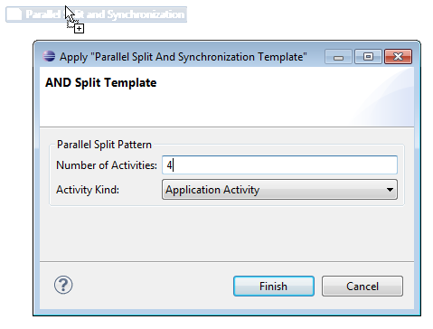
Figure: Enter Parallel Split and Synchronization Parameters for
the Pattern
An example Parallel Split and Synchronization pattern with 3 application activities would look like the following:
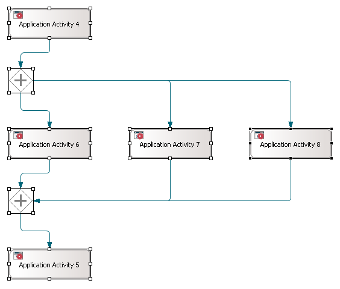
Figure: Example Parallel Split and Synchronization Pattern
added to the Diagram.
This pattern consists of a start activity which spawns via XOR to ONE other threads out of N possible. In the Exclusive Choice Template dialog you can set the following parameters:
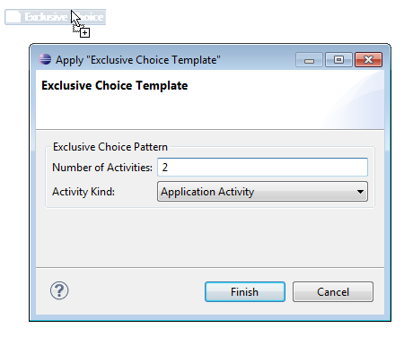
Figure: Enter Exclusive Choice Parameters for the Pattern
An example Exclusive Choice pattern with 2 application activities would look like the following:
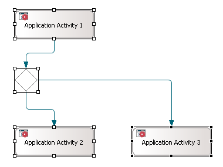
Figure: Example Exclusive Choice Pattern added to the Diagram.
Start activity which spawns via XOR to N threads with one activity each and joins via XOR to one end activity. In the Exclusive Choice and Merge Template dialog you can set the following parameters:
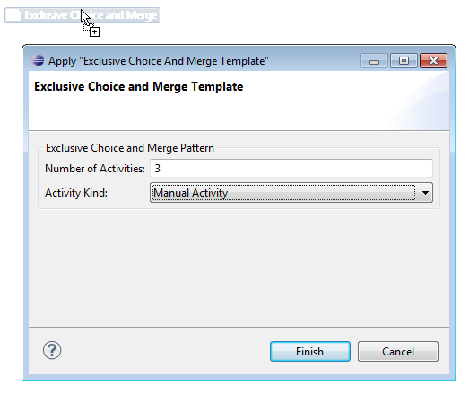
Figure: Enter Exclusive Choice and Merge Parameters for the
Pattern
An example Exclusive Choice and Merge pattern with 2 application activities would look like the following:
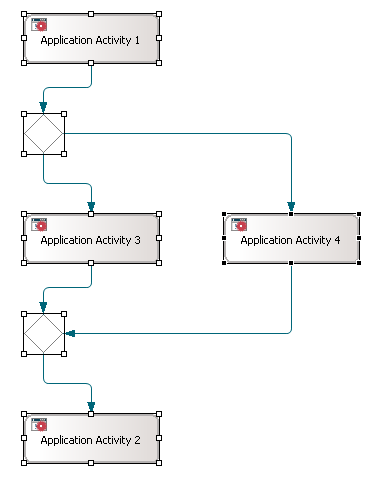
Figure: Example Exclusive Choice and Merge Pattern added to the
Diagram.
This is a pattern to dynamically spawn a subprocess for a list of entries and pass the entries to the subprocess, execute those and join them again.
In the Dynamic Spawn dialog you can choose the implementation process to be set for the subprocess activity:
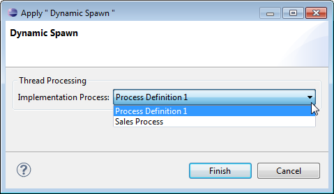
Figure: Enter the Implementation Process for the Subprocess Activity.
An example Dynamic Spawn pattern would look like the following:
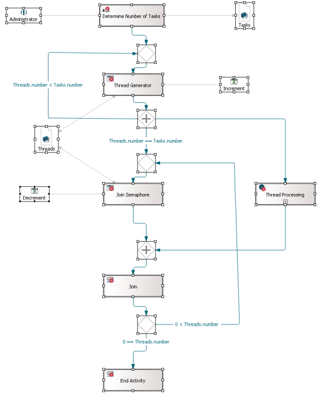
Figure: Example Dynamic Spawn Pattern added to the Diagram.